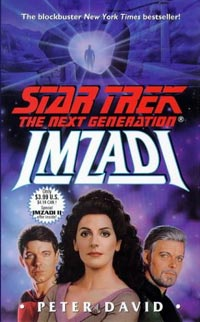
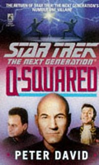
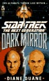

|
Jornadas
literrias
 O
ltimo episdio indito da Nova Gerao foi exibido
nos EUA h mais de sete anos. Para muitos, isso significou o fim
de uma saga --novas histrias seriam vistas apenas nos cinemas.
Mas, para felicidade dos americanos e tristeza dos brasileiros, as
coisas no so to simples. O
ltimo episdio indito da Nova Gerao foi exibido
nos EUA h mais de sete anos. Para muitos, isso significou o fim
de uma saga --novas histrias seriam vistas apenas nos cinemas.
Mas, para felicidade dos americanos e tristeza dos brasileiros, as
coisas no so to simples.
A editora Pocket Books, uma diviso da Simon & Schuster,
responsvel pela publicao de todos os livros do universo de Jornada
nas Estrelas aprovados pela Paramount, ou seja, com selo de
"oficial". At o presente momento, foram publicados 89
livros da Nova Gerao, a maioria com histrias inditas.
No Brasil, apenas uma pequena frao destes ttulos veio a ser
traduzida e publicada, principalmente pela editora Aleph.
Muitos podem perguntar: "Tudo bem, mas no um episdio
novo da Nova Gerao, certo?" Realmente, no .
Alis, muitos dos livros so histrias simples, que poderiam
ter rendido um episdio mediano. Alguns so meras novelizaes
de episdios filmados. Outros, porm, so verdadeiras jias,
com tramas empolgantes, que muitas vezes me fizeram pensar que
dariam timos filmes no cinema.
Mas quais so estes livros?
 Com
certeza, a melhor aventura da Nova Gerao j escrita
"Imzadi" (felizmente, j publicada no Brasil),
escrita por Peter David. David , sem dvida, um dos melhores
escritores da esfera trekker e um grande escritor de fico
cientfica como um todo, j tendo colaborado, por exemplo, com a
srie "Babylon 5". "Imzadi" foi um
estrondoso sucesso, ficando algumas semanas na lista dos livros
mais vendidos do "The New York Times". Na trama, um
maravilhoso turbilho de idas e voltas no tempo, descobrimos que
Deanna Troi morreu durante uma misso diplomtica na Enterprise,
e o comandante Riker, anos aps sua morte, ainda no superou sua
perda, planejando obsessivamente um modo de alterar os fatos. De
quebra, descobrimos como Deanna e Riker se conheceram, e qual foi
sua histria de amor antes de se reencontrarem na Enterprise. Um
livro que poderia muito bem render um timo filme.
Mas
no s. David ainda escreveu outros dois livros que figuram
entre os favoritos dos fs da Nova Gerao. O primeiro
deles, "Q-in-Law", uma divertidssima histria
que rene na Enterprise dois personagens que Picard
"adora": Lwaxana Troi e Q. Ao mesmo tempo, duas famlias
mercadoras rivais, da raa Tizarin, decidem se unir atravs do
casamento de seus filhos, e a Enterprise escolhida como local
da cerimnia. A embaixadora Troi obviamente empolga-se com o
clima e acentua suas cantadas no capito Picard. Para piorar as
coisas, Q surge em meio s festividades, disposto a desafiar o
conceito humanide de "amor". Com a cerimnia em
risco, e os Tizarin beira de uma guerra, Lwaxana decide dar uma
lio de amor a Q... uma de que ele nunca ir se esquecer.
 O
segundo a novela "Q-Squared", na qual
finalmente vemos o retorno de um personagem querido entre muitos
trekkers, e que sempre acreditou-se ser a inspirao para a criao
do personagem Q: Trelane, do episdio da Srie Clssica
"The Squire of Gothos". E, sim, no livro revelado
que Trelane faz parte do Q Continuum. Alis, no apenas faz
parte, como tambm ameaa toda a existncia do Continuum (e,
por conseqncia, a nossa tambm), ao colocar as mos em uma
fonte de incrvel poder, maior que todas as foras combinadas do
Q. E quem Q vai procurar em busca de ajuda? Picard, obviamente!
Junte Q, Picard e Trelane numa mesma trama... e vocs j podem
imaginar o resultado!
Claro que ainda h muitos autores de qualidade no universo
trekker, e alguns timos livros foram escritos. Por exemplo,
Michael Jan Friedman, que escreveu o timo livro "Reunion"
e que por muitos anos foi o responsvel pelos quadrinhos da Nova
Gerao. Em "Reunion", Picard se encontra com a
tripulao de sua antiga nave, a USS Stargazer, enquanto rumam
ao encontro de seu antigo primeiro-oficial, agora governando o Imprio
Daa'Vit. Porm, um a um os antigos tripulantes da Stargazer so
assasinados a bordo da Enterprise, e cabe a Picard descobrir o
assassino, antes que mais amigos sejam mortos... ou mesmo ele.
 Aqueles
que sempre se perguntaram o que aconteceria se Picard tivesse de
enfrentar a si mesmo em batalha puderam ver esta pergunta
respondida no timo "Dark Mirror", de Diane
Duane (outra fantstica escritora). Como o ttulo sugere, a
trama mostra mais uma vez o universo do Espelho, visitado pela
primeira vez pela tripulao da Enterprise original, no episdio
"Mirror, Mirror". Na histria, cientistas do Imprio
(o equivalente da Federao no universo do Espelho) descobrem um
meio de vir ao nosso universo, e decidem conquist-lo. Para
tanto, pretendem capturar a USS Enterprise-D, enviando as
contrapartes de toda a tripulao. Para vencer o desafio, Picard
e sua equipe devem vencer a si mesmos! Outra tima histria, que
com certeza ficaria bem na tela grande!
Claro que esta apenas a nata dos livros da Nova Gerao.
H muitos outros livros bons, mas eu levaria alguns dias para
comentar todos (sem contar que alguns deles eu ainda no li!).
Infelizmente, pouqussimos livros foram publicados no Brasil. ,
trekker brasileiro sofre...
Uma nota importante: os acontecimentos relatados nos livros no so
considerados "cannicos" pela Paramount, ou seja, no
so parte da histria oficial, e qualquer produto feito pelo estdio
para cinema ou TV ignora completamente os livros j escritos.
Isso gera alguns conflitos de informao interessantes... mas
isso tema para a prxima coluna!
Fernando
Rodrigues editor do boletim Base News e escreve regularmente
sobre a Nova Gerao para o Trek Brasilis
|